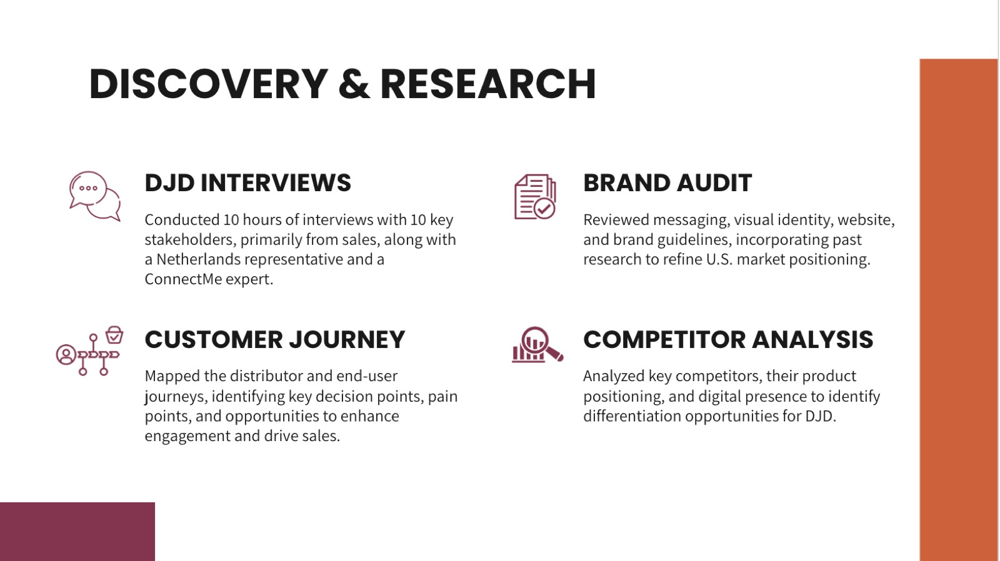
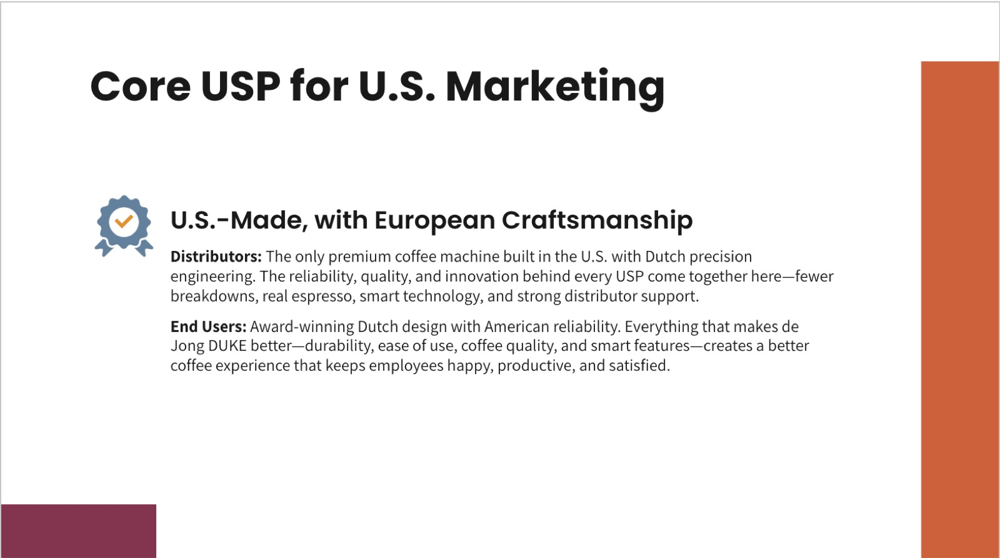
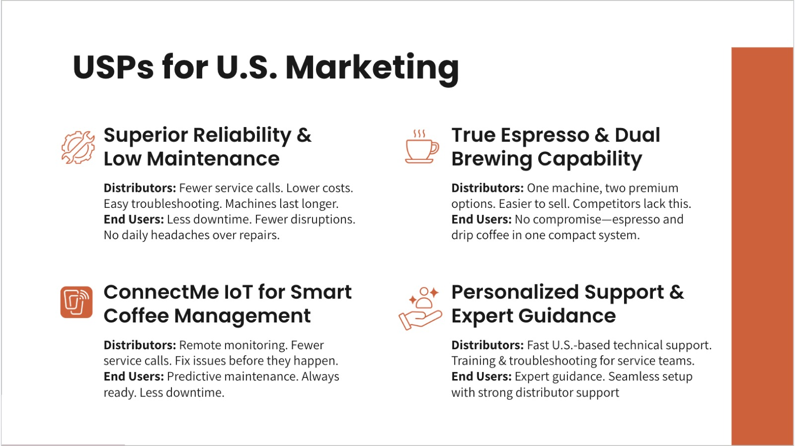
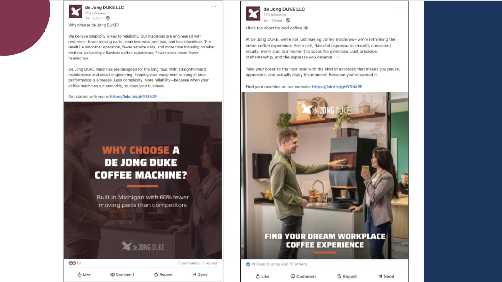
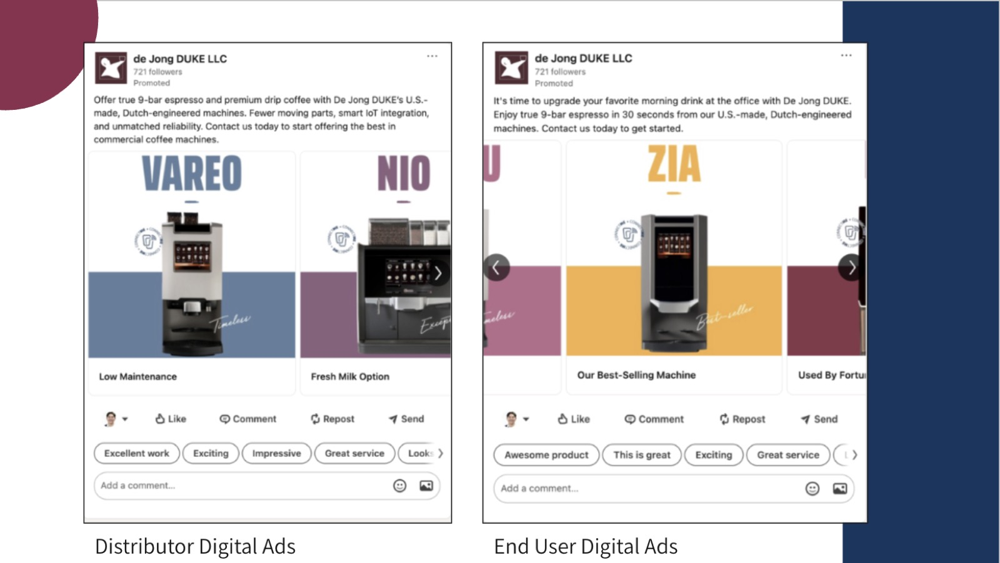
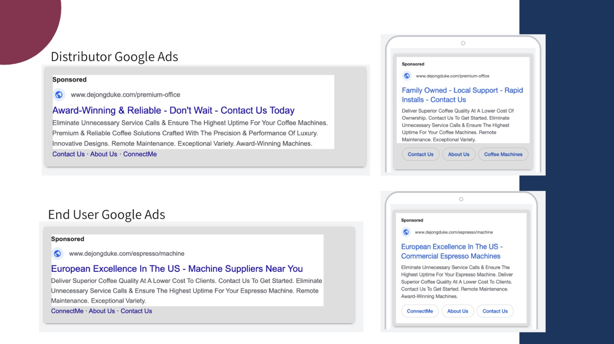
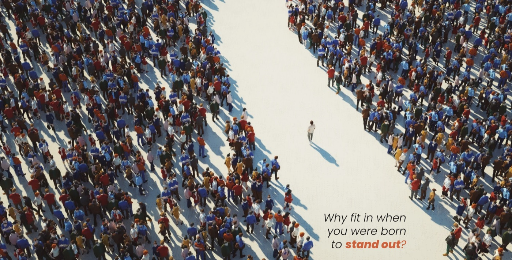

de Jong Duke
Launching a 200-year-old Dutch coffee machine maker in the US.
My role: Led brand strategy, market research, and the communication of findings, then built them into the marketing strategy, channels, and messaging.

De Jong Duke is a Dutch maker of high-quality coffee machines, founded in 1817, ready to grow in the United States.
Enter the US market while honoring everything the brand built over two centuries back in the Netherlands, despite real differences in how the two countries relate to coffee.
10+ hours of interviews with senior leadership, a brand audit, customer research, customer journey mapping, and market research to identify the key differences between US and Netherlands coffee culture, and which core USPs still held. Then embedded the findings into digital marketing and trade show branding, and launched.
Americans rate European coffee as higher quality than anything American. But when they buy, they value US made.
US made with European craftsmanship became the positioning and drove every message across digital ad platforms. It captured the reliability, quality, and innovation behind the product, let the "Ferrari of coffee machines" demand premium prices, and spoke to both audiences: distributors and office managers. It also armed the sales team with USPs they could carry straight into their conversations.
The research came first. It always does.

One core idea, then the reasons to believe it.


The positioning, out in market.



American partnerships.
